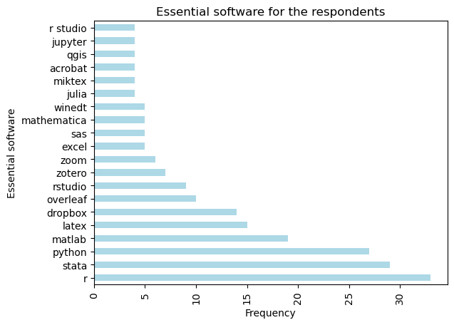

| N | % | ||
|---|---|---|---|
| Organization | ENSAE | 82.0 | 92.1 |
| ENSAI | 7.0 | 7.9 | |
| Total | 89.0 | 100.0 | |
| Field | Computer science | 1.0 | 1.1 |
| Economics | 54.0 | 60.7 | |
| Finance | 5.0 | 5.6 | |
| Other | 3.0 | 3.4 | |
| Sociology | 8.0 | 9.0 | |
| Statistics | 18.0 | 20.2 | |
| Total | 89.0 | 100.0 | |
| Status | Faculty | 48.0 | 53.9 |
| Other | 2.0 | 2.2 | |
| Phd student | 30.0 | 33.7 | |
| Postdoctoral researcher | 8.0 | 9.0 | |
| Research assistant | 1.0 | 1.1 | |
| Total | 89.0 | 99.9 | |
| Seniority | Between 1 and 5 years | 42.0 | 47.2 |
| Between 5 and 10 years | 8.0 | 9.0 | |
| Less than 1 year | 19.0 | 21.3 | |
| More than 10 years | 20.0 | 22.5 | |
| Total | 89.0 | 100.0 |
Software & digital practices at CREST
The survey was conducted between July 2024 and september 2024 among CREST researchers on their digital practices. This summary higlights the main results.
A total of 89 respondents answered the survey (81 completed it totally, with a mean duration of 14 minutes ; only some question were mandatory so the total number of respondents can vary).
Respondents profile
Respondents are mainly ENSAE researchers (92%), mostly faculty/phd student, with a high proportion of economists (61%)
Digital practices
Almost all respondents (87%) are involved in digital processing of data (including simulations) : 99% are using numeric data, 51% textual data, 14% images and 4% audio. More specifically, 29% uses experimental data.
There is a wide diversity of practices at CREST, both regarding computing activites or storage. More than half of the respondant uses dataset around 1 Gb or less (52%), and only 7% declared to use a dataset bigger than 100 Gb (10% reported to not know).
Overall, 83% reported to have enough computing ressources and 77% they had enought storage. Nevertheless, a few respondents reported the limit of available ressources.
My research is in computational statistics and machine learning. You can’t seriously compete with other teams in this field without access to big clusters (100s of CPU cores, GPUs).
The question of getting enough GPU memory (VRAM) for LLM was mentionned a few time. Comments were made on the necessity of flexible cloud storage.
The diversity of practices is visible on the hardware used. For instance, the distribution for the question ‘on which computers do you perform these data processing tasks/computations ?’ :
| [Locally, with my office computer] | [Locally, on my laptop (GENES/CREST or personal)] | [Locally, on a dedicated computer] | [With GENES servers] | [With server outside GENES infrastructure] | ||||||
|---|---|---|---|---|---|---|---|---|---|---|
| N | % | N | % | N | % | N | % | N | % | |
| No | 48.0 | 57.8 | 26.0 | 31.3 | 79.0 | 95.2 | 53.0 | 63.9 | 64.0 | 77.1 |
| Yes | 35.0 | 42.2 | 57.0 | 68.7 | 4.0 | 4.8 | 30.0 | 36.1 | 19.0 | 22.9 |
| Total | 83.0 | 100.0 | 83.0 | 100.0 | 83.0 | 100.0 | 83.0 | 100.0 | 83.0 | 100.0 |
And for the question ‘Where do you currently store your data ?’
| [Locally, with my office computer] | [Locally, on my laptop (GENES/CREST or personal)] | [Locally, on a dedicated computer] | [With the ABRA server in GENES] | [With other GENES servers (than ABRA)] | [With the CASD outside GENES] | [With other servers outside GENES] | ||||||||
|---|---|---|---|---|---|---|---|---|---|---|---|---|---|---|
| N | % | N | % | N | % | N | % | N | % | N | % | N | % | |
| No | 55.0 | 66.3 | 30.0 | 36.1 | 80.0 | 96.4 | 78.0 | 94.0 | 68.0 | 81.9 | 65.0 | 78.3 | 58.0 | 69.9 |
| Yes | 28.0 | 33.7 | 53.0 | 63.9 | 3.0 | 3.6 | 5.0 | 6.0 | 15.0 | 18.1 | 18.0 | 21.7 | 25.0 | 30.1 |
| Total | 83.0 | 100.0 | 83.0 | 100.0 | 83.0 | 100.0 | 83.0 | 100.0 | 83.0 | 100.0 | 83.0 | 100.0 | 83.0 | 100.0 |
Software practices
Regarding operating systems, the majority (70%) uses Windows, on third MacOs (36%) and only 13.5 uses Linux.
A majority of respondents (58%) reported to need a desktop computer.
The main softwares deemed to be necessary are Stata, R, Python, Matlab, Dropbox and Latex.

Only 15% of the respondents are paying software with their research funds. Some examples are : databases access, chatGPT, MaxQDA… More (43%) are paying software with their own pocket money : Dropbox, Claude/ChatGPT, Zotero storage, Overleaf, Dropbox. To note : some of those software are available in the laboratory offer.
To the question on the needs, several suggestions were made : chatGPT, Acrobat Pro, Dropbox/Google drive cloud storage, OCR software, or Premium Overleaf account
The current programming practices at CREST shows the diversity of languages, with a dominant of R, Python and Stata.
| r | python | julia | stata | matlab | sas | |||||||
|---|---|---|---|---|---|---|---|---|---|---|---|---|
| N | % | N | % | N | % | N | % | N | % | N | % | |
| No | 30.0 | 36.1 | 25.0 | 30.1 | 72.0 | 86.7 | 39.0 | 47.0 | 52.0 | 62.7 | 73.0 | 88.0 |
| Yes | 53.0 | 63.9 | 58.0 | 69.9 | 11.0 | 13.3 | 44.0 | 53.0 | 31.0 | 37.3 | 10.0 | 12.0 |
| Total | 83.0 | 100.0 | 83.0 | 100.0 | 83.0 | 100.0 | 83.0 | 100.0 | 83.0 | 100.0 | 83.0 | 100.0 |
A lot of software paid from researcher’s poket
There is a few specific demand to access dedicated software (N Vivo, premium subscription for services, …), especially for generating models.
A vast majority of respondents (74%) are using generative model for their research, one third reported to use it a lot. Three out of for are using free access solutions.
This use cover a diversity of tasks :
- editing english
- copilot for programming / understanding code
- summarizing articles
- formatting references
- email reformulation
- text annotation for research tasks
- exploring topics
Reproducibility, open source and evolutions
The respondents were asked on the issues of reproducibility of computational results, and a majority considers it important issues for them.
| Effectif | Pourcentage (%) | |
|---|---|---|
| These are distant or non-existent issues in your activity | 14.0 | 17.3 |
| These are important issues in your activity | 40.0 | 49.4 |
| You have encountered these issues in your activity | 27.0 | 33.3 |
| Total | 81.0 | 100.0 |
On the question of the adoption of open source and free software solutions, only 22% reported to not be familiar with this trend, and 41% reported to be actively involved.
Digital practices are constantly evolving, and new solutions are emerging. An open field allowed to collect insights and comments on those evolutions. For instance, tools like Dropbox or Google Drive seemed to have found their place in the research workflow. This underline the importance of flexible storage.
My co-authors at other research institutions (Berkeley, Chicago, Columbia, Harvard) all use Dropbox and/or Google Drive to store the data involved in our research projects. To work collaboratively on our projects, I therefore need to use Dropbox and Google Drive, on which relatively large amounts of data are stored (about 3 To for my currently active projects). The free tier plans are not sufficient: I need to pay for increased storage on both Dropbox and Drive.current offering from CREST to use OneDrive is unfortunately not sufficient.
It appears a need for improvement in accessing existing solutions : SSH connection to the servers, more information of available ressources, etc. There is a demand for more training sessions on software and IT offerings (40%), for instance parallel computing, Git/Github good practices, and an overview of available ressources at CREST.
For instance, the development of solutions as Onyxia is mentioned as a positive point to access shared ressources. For the moment, only 22% of the respondents used Onyxia once, with 33% having no idea of its existence.
“If there is an infrastructure that supports me, I would love to make my research data accessible and reproducible. Onyxia is a good tool and that should be promoted for usage within our laboratory.”
The necessity to get available GPU for deep learning and LLM practices is clearly highlighted. Another important point was the need for secured storage accredited to store sensitive informations.
“In terms of architecture, I’m overall satisfied with what we have in the department. The only need I have that is not currently fulfilled would be a computing server sufficient secure to store confidential data. Something in between the existing computing servers and CASD (which cannot host easily confidential data that I can obtain from third parties, and is very expensive). It would be amazing to set up this kind of server.”
Finaly, the developement of AI assistant creates new practices which encounter several constraints
“We need more flexibility in the use of online service such as AI (Chatgpt, Claude, …), Deepl, Overleaf, Grammarly, … In particular, it’s completely absurd that we can’t use our research fund to pay for the online service.”
Insights
- CREST has a strong digital culture, but there is a diversity of software and workflows.
- Better communication is needed: some resources, such as Overleaf licenses and Onyxia, are available but not widely known.
- New practices, such as generative tools, are emerging and need to be discussed.
- A solution for secure storage is a topic of interest.